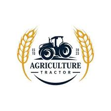
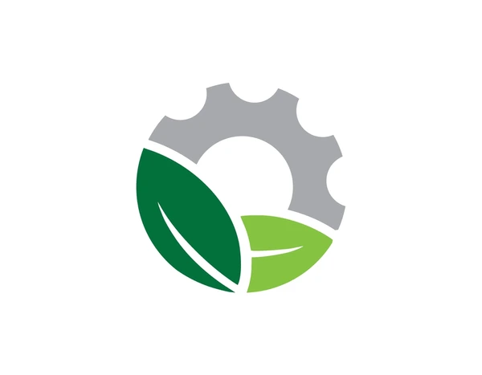

Bridging the Gap Between Farmers and Opportunity
MyFarmAccelerator was born from the realization that farmers in Africa struggle not from lack of effort, but from lack of access. We started in Akure, Nigeria, with a simple goal: to connect smallholder farmers to the resources, technology, and markets they need to grow sustainably.
View Our Services
"“We’re bridging the gap between farmers and opportunity from soil to marketplace.”
Our Promise To You
Brand Promise: To simplify the farming journey from planting to profit.
Partner With Us
Join Our Ecosystem of Growth
We welcome collaborations with organizations committed to scaling agricultural impact and empowering the African farmer.
Agribusinesses & Processors

Agribusinesses & Processors

NGOs & Development